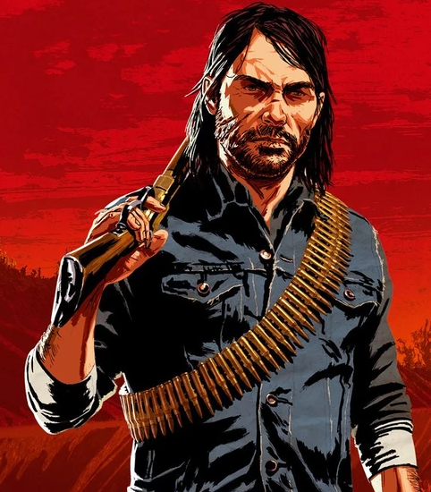

- 


Estados Unidos, 1899. O fim da era do velho oeste começou. Depois de tudo dar errado durante um roubo em uma cidade do oeste chamada Blackwater, Arthur Morgan e a gangue Van der Linde são forçados a fugir. Com agentes federais e os melhores caçadores de recompensas no seu encalço, a gangue precisa roubar, assaltar e lutar para sobreviver no impiedoso coração dos Estados Unidos. Conforme divisões internas profundas ameaçam despedaçar a gangue, Arthur deve fazer uma escolha entre os seus próprios ideais e a lealdade à gangue que o criou.